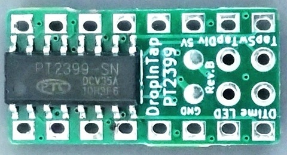
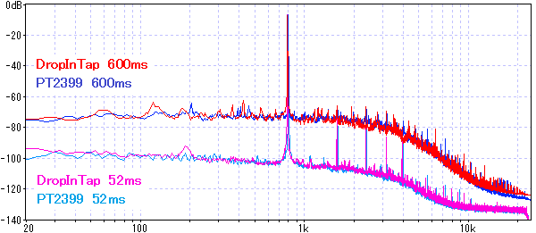
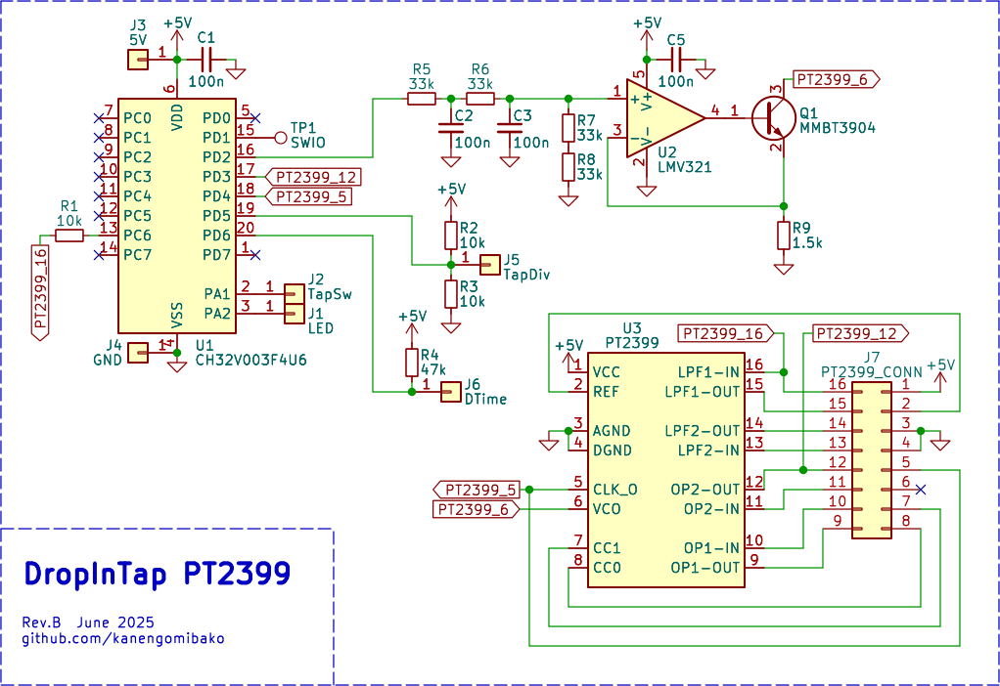
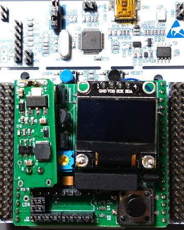
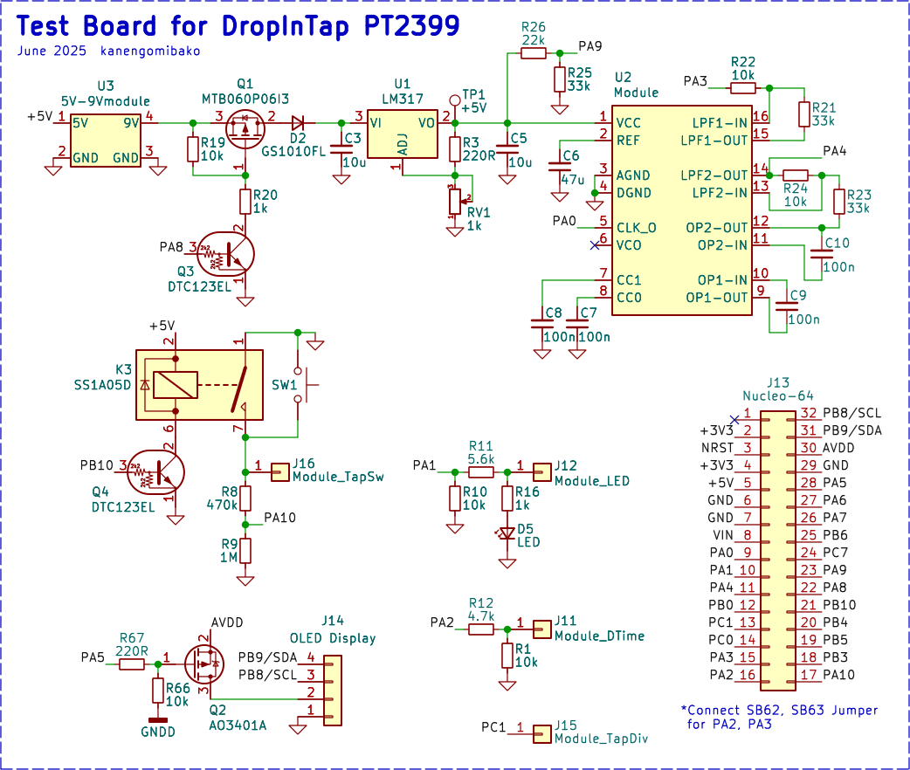

DropInTap PT2399
2025年06月24日 カテゴリー：自作エフェクター（アナログ）

ディレイIC PT2399にタップテンポコントロールを追加したモジュールです。販売ページはこちら。KiCadデータおよびソースコードはGitHubにあります。
→ 製作例：E6 Delay（記事準備中）
開発の背景
PT2399は、長年にわたり自作ディレイエフェクターに使用されてきた定番ICです。このICのディレイタイムは6番ピンの電流または抵抗値で制御されています。これを活用してタップテンポ機能を実現した製品には、以下のような方式が採用されています。
デジタルポテンショメーター（DPOT）方式
パルス幅変調（PWM）方式
PT2399やDPOTの個体差があるため、いずれの方式でもキャリブレーションが重要です。キャリブレーションが可能なのはBontempoとTapperですが、Bontempoは手動なのでおそらく精度が高くなく、Tapperは自動ですが販売停止中となっています。こうした背景を踏まえ、安価・小型・高精度を目指した新しいタップテンポモジュールを開発することにしました。
設計方針
当初は高精度を実現するため水晶振動子が入ったモジュールを想定していました。しかし、必要なのはタップテンポの間隔と実際のディレイタイムという相対的な時間で、絶対的な時間の精度は必要ないため、水晶振動子はなくても問題ないと気付きました。そして最終的には、DIPパッケージのPT2399と同等サイズのモジュールに表面実装のPT2399とマイコンを内蔵することができました。これにより、出荷時キャリブレーションによる個体差を吸収した品質保証が可能です。マイコンには、低価格で5V駆動可能なCH32V003を使うことにしました。
ディレイタイム制御方式の比較
デジタルポテンショメーター（DPOT）
50kΩ／256ステップでは1ステップ約195Ωとなり、ディレイタイムは約2ms単位で調整されます。ただし±30%のばらつきがあるため、最悪の35kΩだと最大ディレイタイムが430msと短くなります。100kΩのDPOTと固定抵抗を並列にする、DPOTを2個使うといった案も考えましたが、どうしてもコストが問題となります。JLCPCBでは1ドル以下のDPOTがありますが、安定した在庫は期待できません。
DAコンバータ（DAC）
DACと抵抗を6番ピンに繋ぐ方式です。12bit DAC（5V動作）で10ms程度の誤差が出る可能性があります。こちらもコストが問題となります。
パルス幅変調（PWM）
PWM周波数が低い場合、ノイズの問題が生じる可能性があります。外付け部品は汎用トランジスタ、フィルター用の抵抗とコンデンサです。最も安価なため、この方式を採用することにしました。
デューティ比の高精度制御
PWMの仕組みについてはこちらのページ等をご参照ください。
当初はPWM分解能12000（PWM周波数4kHz）としましたが、ローパスフィルターがあっても4kHzのノイズが乗ってしまうことがわかりました。ノイズ源が5Vp-pという大きな振幅の信号なので、防ぐことができないようです。そのため、PWM周波数を可聴域外の48kHz（PWM分解能1000）にしました。
デューティ比は、CCR（Capture/Compare Register）とARR（Auto-Reload Register）で決まり、ARRがPWM分解能にあたります。通常はCCRのみを変化させますが、精度向上のためARRも必要に応じて変更することにしました。
例）ARR = 999、CCR = 50 → デューティ比：100 / (999 + 1) = 0.100
CCRを +1 → デューティ比：101 / (999 + 1) = 0.101
ARRを -1 → デューティ比：100 / (998 + 1) = 0.1001
PWM周波数が50.5 kHzまで増える可能性がありますが、動作上の問題はありません。
キャリブレーションの方法
Tapperのように、PT2399のクロック周波数を測定する方法を検討しました。しかしながらCH32V003ではうまく周波数をカウントすることができませんでした。PT2399のクロック信号は周波数が高い（最大12MHz）ので、信号品質に問題があった可能性があります。また、周波数を測定できたとしても、クロック周波数とディレイタイムの関係が個体差なく一致するものなのか不明でした。
そこで今回はPT2399にパルス波を入力し、遅延したパルス波を検出してディレイタイムを測定することにしました。ただし、この方法では測定時に大きな音が出力されるので注意が必要となります。
ノイズ評価
マイコンを音声信号の部分に接続するとノイズが増加する可能性があるため、ディレイタイム52msと600msでPT2399単体と比較しました。約800Hzの正弦波をE6 Delayに入力しています（ディレイ音のみ出力）。
ほぼ同等で問題ありません。PT2399が元々ローノイズではないためと思われます。
回路図
PT2399 Tap Tempoと同様の回路です。外付け部品が少なくなるよう、DIVスイッチやディレイタイムポット周辺にあらかじめ抵抗を配置しました。
6番ピンの処理
既存のPT2399からの置き換えを考えた場合、6番ピンにどのような回路が接続されているか不明です。このため、モジュール上の6番ピンにあたるパッドは未接続としました。
PWMのローパスフィルタ
コンデンサの容量が大きい一次フィルタにすると、コンデンサの充電に時間がかかり立ち上がりが遅くなります。二次フィルタとすることでカットオフと応答性の両立を図っています。
ソフトウェア概要
開発環境はMounRiver Studioを使用しました（参考：格安RISC-VマイコンCH32V003をMounRiver Studio Ⅱで開発してみる）。STM32CubeIDEのように自動でコードを出力する機能はないので、大まかな部分はAIを使いました。mainループでADC値の取得やディレイタイム更新、タイマー割り込みでタップスイッチの読み取り等を行っています。
フラッシュメモリ使用量
16kB中の約14kBを使用しています。floatの演算やprintfを使用すると容量が増えるので注意が必要です。さらに大きなプログラムを組む場合は、容量が少なくて済むch32funライブラリを検討する必要がありそうです。
キャリブレーション処理
ディレイタイムは6番ピンの電流に反比例するため（参考：Useful design equations for the PT2399）、理論上はPWMのデューティ比の逆数に比例するはずです。しかし実際はやや非線形となるため、キャリブレーションで取得した約50ms間隔のサンプルを元に線形補完でデューティ比の算出を行っています。
個体差の対応
キャリブレーション時、最小デューティ比0.024でのディレイタイムは、700～770msと個体差がありました。また、デューティ比が大きすぎるとディレイタイムが増える個体が存在したため、デューティ比の最大値を0.75に制限してあります。最小ディレイタイムは50～54msとなります。
電圧・温度の影響
キャリブレーションは電源5V、温度24℃付近で行っており、この条件ではタップ間隔とディレイタイムの差が概ね±1ms以内になります。異なる条件での最大誤差は以下の通りです。
| 条件 | 最大誤差 |
|---|---|
| 4.6V | 7ms |
| 4.8V | 3ms |
| 5.2V | 4ms |
| 5.4V | 8ms |
| 10℃ | 2ms |
| 40℃ | 3ms |
温度による影響は比較的小さいものの、電源電圧の変動は精度に影響するため、使用するレギュレータの出力電圧は確認した方がよいでしょう。
動作確認基板
Nucleoボードに接続し、出荷前のキャリブレーションと動作確認を行うための専用基板です。
PA3からパルス波を出力し、遅延したパルス波をPA4（ADC）で検出しディレイタイムを測定します。精度向上のため、水晶振動子を取り付け済みです。
電源には自作の5V→9V昇圧モジュールとLM317を使用し、動作電圧を微調整できます。また、ディスプレイのI2C通信がハングアップしてしまうことがあったため、電源リセットを行えるようにしてあります。